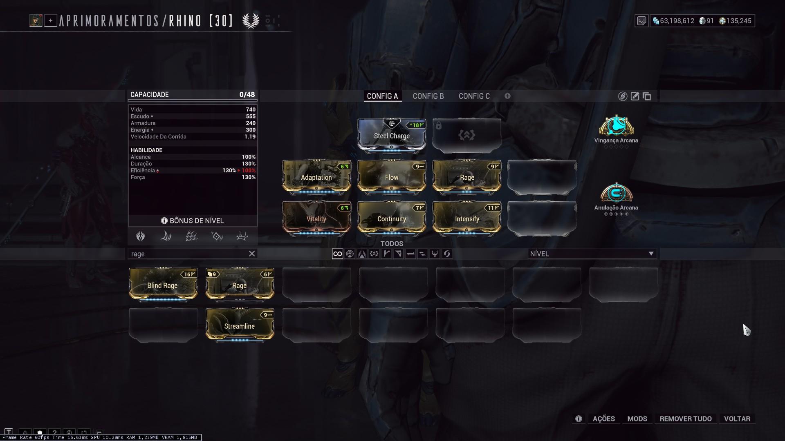
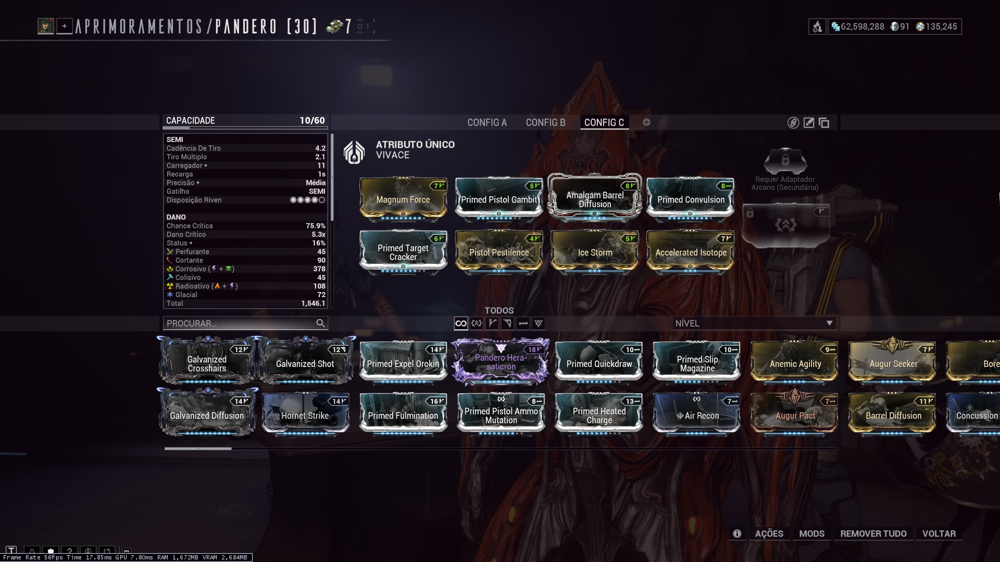

Demonstrações
Vídeos de caçadas para referências.
Rhino
Setup Inciante
| Arcanos | Anulação Arcana MAX, Vingança Arcana R0 |
|---|---|
| Primária | Ignis Quimérica ( |
| Secundária | Pandero ( |
| Arma-Branca | Redeemer Prime ( |
| Tempo de execução | 10 minutos e 40 segundos |
Ver imagens e vídeo




Chroma Prime
Setup Iniciante
| Arcanos | Guardião Arcano MAX, Vingança Arcana MAX |
|---|---|
| Primária | Ignis Quimérica ( |
| Secundária | Pandero ( |
| Arma-Branca | Redeemer Prime ( |
Tempo de execução | 7 minutos e 48 segundos |
Ver imagens e vídeo

Setup Avançado
| Arcanos | Anulação Arcana MAX, Vingança Arcana MAX |
|---|---|
| Primária | Kuva Ogris ( Nightwatch Napalm ) |
| Secundária | Sicarus Prime ( |
| Arma-Branca | Zaw ( |
| Tempo de execução | 3 minutos e 43 segundos |
Ver imagens e vídeo